强化学习的数学原理
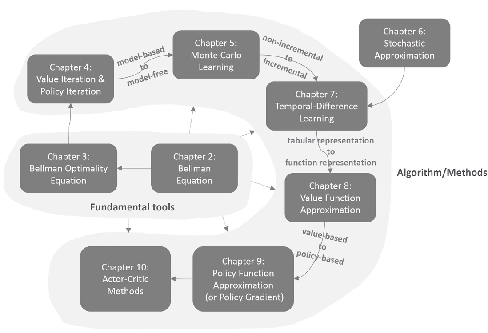
基本概念
变量
State
State Space
Action
Action Space of a State
Episode：agent在终端状态停止时形成的轨迹
Episodic Tasks：含终端状态
Continuing Tasks：无限执行（终端状态任务可以转化为无限任务，终点不断循环，或者反复奖励）
Return：整条路径的reward
Discounted Return：对不同步的reward进行加权，有两个作用
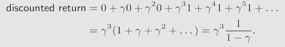
未来的reward权值更小
防止无限执行带来的无穷reward
Markov Decision Process（MDP）：任一阶段的函数都与历史无关（Markov Property）
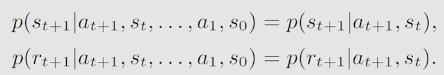
函数
Policy：输入当前状态，输出为动作
Reward：输入当前状态和动作，输出为奖励
State Transition：输入当前状态和动作，输出为下一个状态
贝尔曼公式
- State Value：从一个状态出发得到的期望Return（Return是单条轨迹，State Value是所有可能轨迹）
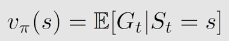
Bootstrapping：不同状态之间的State Value是相互依赖的，可以构成n个方程，再联立求解
Bellman公式：描述不同状态State Value之间的关系
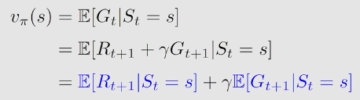
注意：我们需要将除了当前状态以外的所有变量视为随机变量，这里面主要涉及策略\(\pi(a|s)\)、状态转移\(p(s'|s,a)\)、奖励\(p(r|s,a)\)三个概率分布，由此可以得到后半部分的表达式
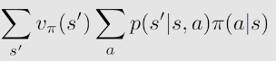
最终贝尔曼公式表达为
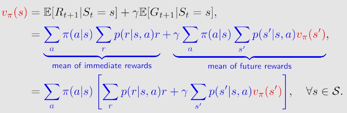
对所有状态下的贝尔曼公式进行化简，写成矩阵形式，得到类似矩阵形式
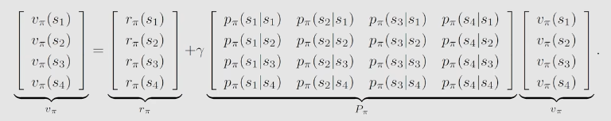
Policy Evaluation：求解Bellman公式从而评价策略
Action Value：从一个状态和动作出发得到的期望Return
贝尔曼最优公式
最优策略的定义
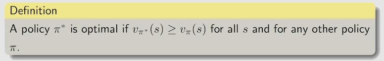
在完全可观测的MDP过程中，由于对每个action value存在一个准确估计，最优策略是确定性的，贪婪的，但是存在一些情况需要随机最优策略
对抗性场景：确定性策略容易被对手预测
极端场景：Action Value的期望是最大的，但是其分布是极端的，可能很大，也可能很小，风险大，因此需要采用随机策略平衡收益和风险
部分可观测的MDP（POMDP）：对于不确定性的估计不准（公式中某些随机变量的分布存在误差），需要通过随机策略选择一些其他策略实现探索性行为（降低分布误差）
定理：在POMDP中，确定性策略不一定是最优的，随机策略的集合严格优于确定性策略（Smallwood & Sondik, 1973）。
贝尔曼最优公式定义
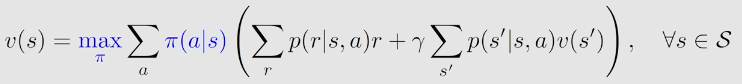
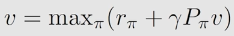
公式求解
1、策略求解
2、State Value求解
贝尔曼最优公式转为\(x=f(x)\)，也就是求\(f(x)\)的不动点，此处引入压缩映射定理
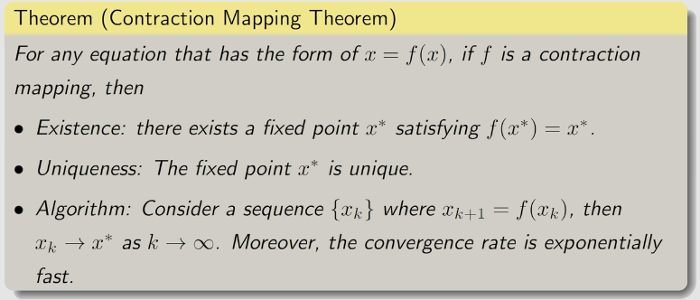
其中压缩映射的定义是
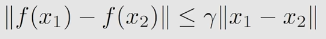
对于贝尔曼最优公式而言，由于\(\gamma,P_\pi\)的存在，其特征值小于1，所以满足压缩映射的条件
最优策略的影响因素
- Reward
对Reward进行仿射变换后，首先可以推得单步action rewards变为\(r_\pi'=ar_\pi+b\)，由于最优State Value可以视为每步action rewards的求和，因此变为
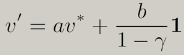
将等式代入贝尔曼最优公式，可以发现最优策略不变
状态转移函数
Discounted Rate\(\gamma\)
值迭代&策略迭代（有模型求解贝尔曼最优公式）
值迭代算法
利用压缩映射定理求解贝尔曼最优公式的过程就可以称为值迭代算法，期间得到的最终解对应的策略就称为最优策略
- 猜测State Value-》计算Action Value-》策略迭代-》State Value迭代
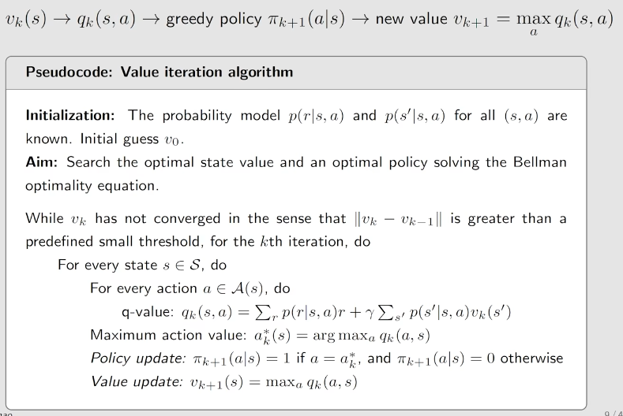
策略迭代算法
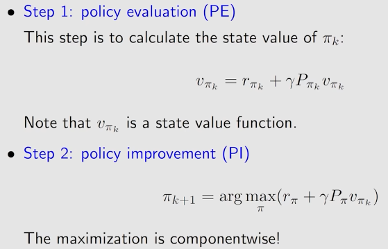
- 可以证明，随着迭代，\(v_{\pi_k}\)是递增的，且最终会收敛到最优State Value
截断策略迭代算法
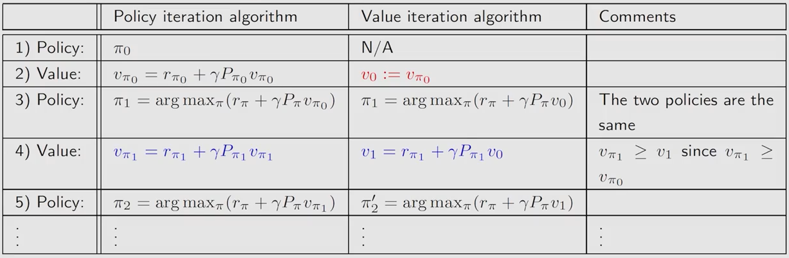
值迭代与策略迭代之间的区别在于
- policy evaluation过程中在什么条件下截止：策略迭代算法是迭代无穷步找到策略对应的真实State Value，而值迭代算法是只迭代一步找到一个近似State Value
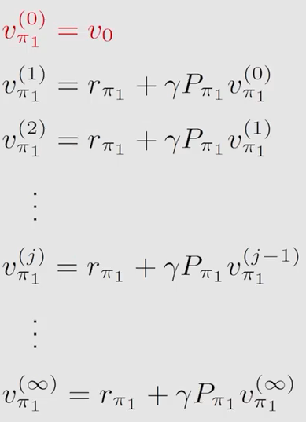
- 初始猜测的是policy还是state value
蒙特卡洛方法（无模型求解贝尔曼最优公式）
Generalized Policy Iteration
- 在policy evaluation和policy improvement之间来回切换
MC Basic
- 相对于策略迭代方法，对policy evaluation进行了修改，采用采样方法进行估计，同时估计目标也发生了一定变化，从State Value变为Action Value（State Value到Action Value需要模型信息，所以直接估计Action Value）
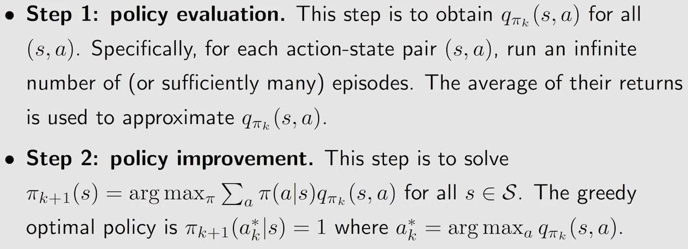
每一个Episode的length必须足够长，否则远一些状态无法找到最优策略
两种改进：
采样一个Episode，可以得到length个state-action pair对应的return，不仅仅只利用第一个state-action pair
采样一个Episode之后直接进行policy improvement，即将采样数N设为1，提高效率
缺点：Exploring Starts
Exploring：必须对所有的state-action pair都进行采样，才能确保最终得到的策略是最优的，否则有些策略可能被忽视
Starts：为了保证遍历所有state-action pair，必须从每个state-action pair开始生成一个episode，效率低
MC \(\epsilon\)-Greedy
Soft Policy：采用随机策略
\(\epsilon\)-Greedy：摆脱Exploring Starts的缺陷，但是\(\epsilon\)不能设置的稍大，否则策略将失去最优性（即使此时将\(\epsilon\)调为0，依然不是最优策略），在实际操作中，\(\epsilon\)需要在迭代过程中由大变小，从而同时保证最优性和探索性
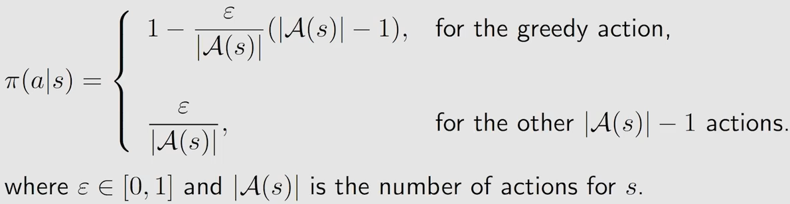
随机近似与随机梯度下降（从非增量方法到增量方法，离线到在线）
随机近似
- 考虑均值求解，除了所有数据求平均以外，还能采用增量方法计算
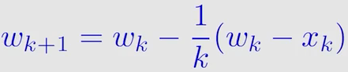
将\(\frac{1}{k}\)替换成\(\alpha_k\)之后，就可以得到一个随机近似算法的特殊形式
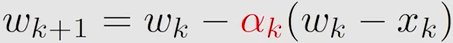
- Robbins-Monro算法：解决目标函数未知情况下的求解问题
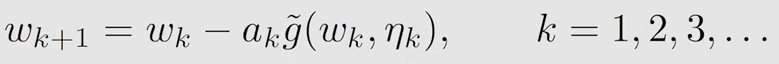
收敛条件：
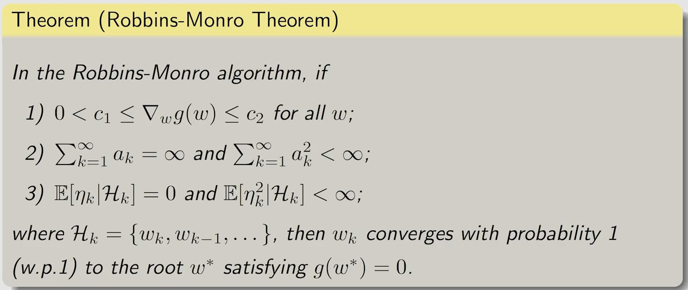
第一个条件：单调递增且导数有界
第二个条件：\(a_k\)最终收敛到0（保证\(\omega\)能够收敛），但是之前不为0（保证任意初值都能够在步长限制内达到目标值）
第三个条件：观测噪声的期望为0且方差有界
实际操作中，可以取\(a_k=\frac{1}{k}\)，同时在k很大时，直接对\(a_k\)取一个小的常值，避免后续数据作用过小
收敛定理的证明：参考另外一个定理
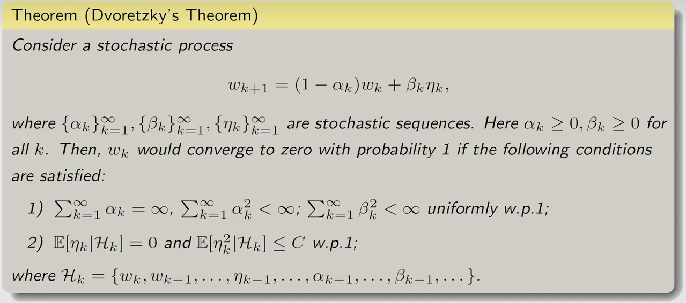
随机梯度下降
- 典型的梯度下降方法
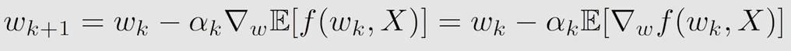
引申出两种梯度计算方法
- 批量采样估计
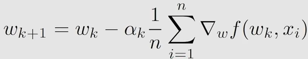
- 随机采样估计（随机梯度下降）
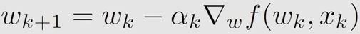
收敛速度分析
- 分析随机近似带来的梯度相对误差
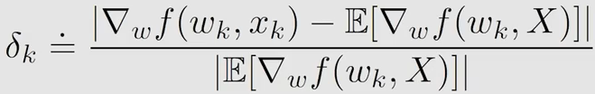
通过变换得到
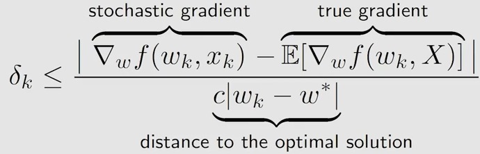
可以看出，当初值与目标值相距较远时，相对误差接近于0，随机梯度与真实梯度基本一致；相距较近时，展现出随机性
三种梯度下降方法：MBGD在BGD的基础上在进行一次采样，采样m个结果
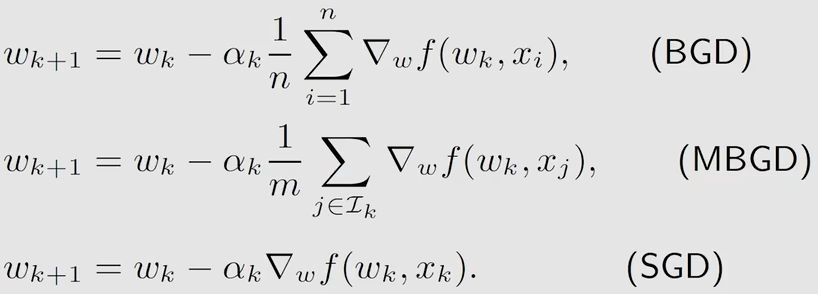
Tricky
- 对于一些包含求平均的确定性问题，可以人为将这个确定的平均数转为随机变量
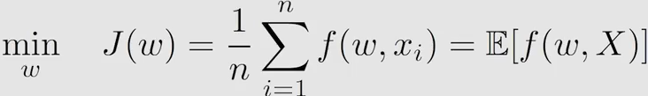
注意此处随机变量的概率密度取决于你的求平均方式，如此处，概率密度定义为
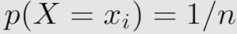
时序差分方法
时序差分方法与蒙特卡洛方法的区别：
| 时序差分方法 | 蒙特卡洛方法 |
|---|---|
| 在线：在Episode进行过程中时刻发生 | 离线 |
| 可以适用于Episodic或连续任务 | 适用于Episodic任务 |
| Bootstrapping：依赖于初值选取和历史估计值（增量式更新） | 全量式更新：直接重新估计，与历史数据无关 |
| 估计值方差小：每次更新涉及的随机变量更少 | 估计值方差大：每次更新需要对后续所有reward进行求和 |
| 有偏估计：更新公式中逼近的不是真值，期望与真值之间存在误差 | 无偏估计：更新公式的期望与真值一致 |
State Value估计（基本思路）
- 首先根据Bellman公式，我们可以将State Value表示为如下期望形式
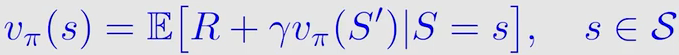
- 接着可以采用SGD方法对此进行求解
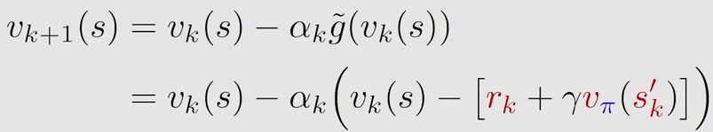
- 其中\(v_\pi\)可以直接替换成\(v_k\)，假设存在一个状态的\(v_k(s)\)等于\(v_\pi(s)\)，可以推论得到所有\(v_k(s)\)会收敛到\(v_\pi(s)\)，由此得到最终的更新公式
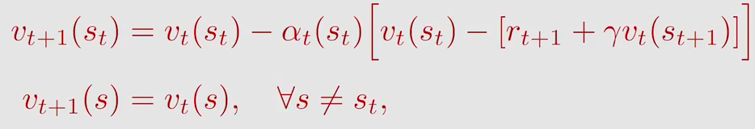
注意，这个更新在episode的每一步中都会发生，对所有状态的State Value都会更新，只不过，如果对于非\(s_t\)的状态，其学习率\(\alpha_t(s)\)为0
收敛条件
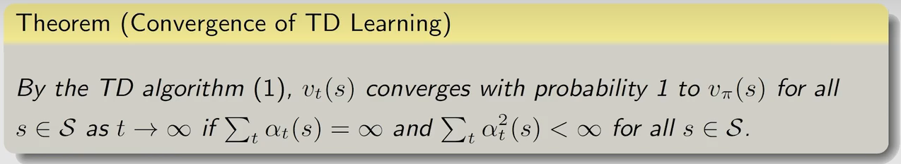
Action Value估计：Sarsa（实际方法）
- 直接估计Action Value，再和Policy Improvement相结合
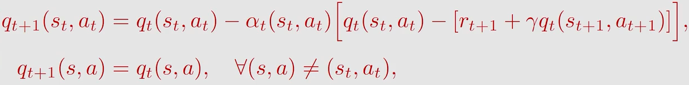
通过对Action Value的期望公式进行变换，可以得到两种变体
- 变体1：Expected Sarsa
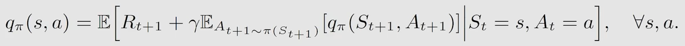
消除了一个随机变量\(A_{t+1}\)，采用期望进行替代，再采用SGD求解
- 变体2：n-step Sarsa
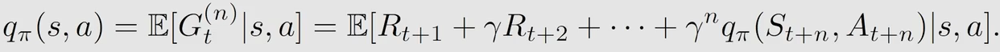
将下一时刻State Value进行展开，引入更多的action reward随机变量，再采用SGD求解
Policy估计：Q-learning
- 对Action Value的期望公式进行变换，注意，之前的Sarsa算法都是在求当前策略下的Action Value（贝尔曼公式），但是此处的Q-learning算法是直接在求最优策略下的Action Value（贝尔曼最优公式），二者存在本质区别
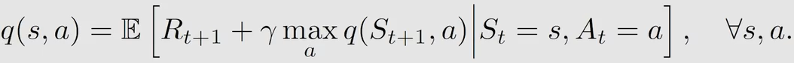
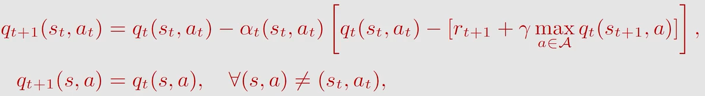
- On Policy vs Off Policy：前者数据生成采用的策略与被改进的策略一致（蒙特卡洛方法，Sarsa），后者不同（Q-learning）
不同方法对比
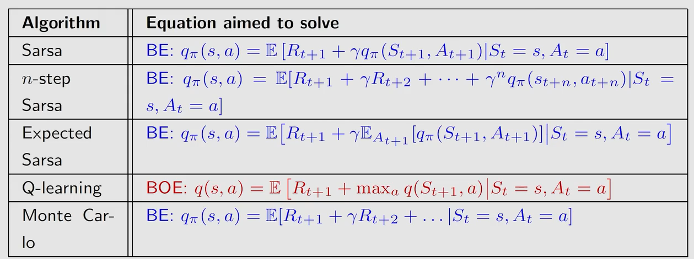
值函数近似（表格形式到函数形式）
- 参考之前的思路来开发：先考虑policy evaluation，再考虑action value估计，最后考虑策略更新
Policy Evaluation
将State Value用一个值函数\(\hat{v}(S,\omega)\)近似，Policy Evaluation的问题转变为最小化两个函数之间距离
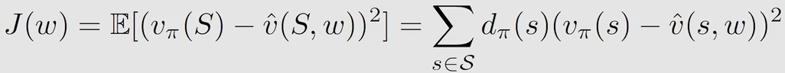
主要到S是一个随机变量，因此其存在概率分布，函数之间的距离转变为期望，概率分布由人为指定，常采用stationary distribution：在一个long run episode中，每个状态被访问的次数，这个概率分布可以通过如下方法求解
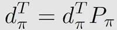
下一步应当是通过梯度下降来求解最优化问题
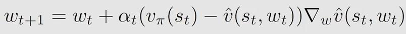
中间存在\(v_\pi(s_t)\)，为了实际使用，有两种替代法
- 采用蒙特卡洛的思想进行替代
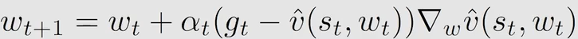
- 采用TD-learning中的思想进行替代
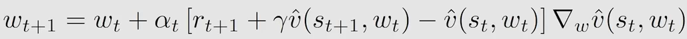
注：这里按照个人理解有个值得讨论的问题，因为最开始假设了S的概率分布是\(d_\pi\)，因此在采用随机梯度下降过程中对于\(s_t\)的采样也应该按照\(d_\pi\)进行采样
Action Value估计
- Sarsa：
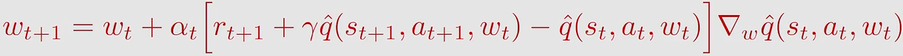
- Q-learning：
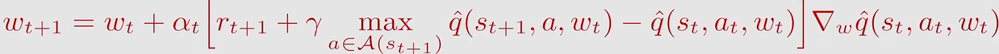
注：同Policy Evaluation中提到的，此处对于（S，A）的概率分布假设是怎样的，如果考虑的是均匀分布，那么是不是和DQL一样，需要将Episode打散，然后再进行均匀采样，从而满足分布条件？但是，如果假设（S，A）的概率分布与当前策略定义的分布一致，例如对于On-Policy版本的Q-learning，那么即使不进行进一步采样，也是隐含满足概率分布条件的
Deep Q-learning
与Q-learning的值函数版本区别：
- 原有版本的期望值是一直在变化的，这个不利用现有的神经网络训练，所以Deep Q-learning提出了延迟学习的办法，同时存储两个网络（目标网络和训练网络），先固定前半部分（目标网络）
对训练网络训练n次之后再将训练网络的值赋给目标网络
- Experience replay：对于表格形式的算法而言，是对每一个Action Value单独进行更新，让其单独期望误差最小，而对于函数形式而言，其是让所有的Action Value的平均期望误差最小（对比两个期望公式，表格形式在最后是指定了随机变量的取值的，而函数形式是没有的）。因此包含分布条件，假设（S，A）为均匀分布，需要将Episode打散，再进行均匀采样一批，进行训练（其实对于表格形式，也可以用这种方式将之前Episode复用）。
Model-based Deep Reinforcement learning
- 对于DRL来说，其sample efficiency可能很低，因为环境模型未知，策略对于环境的鲁棒性只能通过大幅增加采样得到
策略梯度方法（值优化到策略优化）
定义Metric
由于策略用函数表示，所有State对应的策略一起变化，因此指标不能再采用最优策略定义，需要进行求和得到标量指标
- Average Value
其中\(d(s)\)可以采用均匀分布（与策略无关），也可以采用Stationary Distribution（与策略相关）
- Average Reward
- 以上两个指标是等价的
求解Gradient
不同类别的metric得到的梯度都可以写成类似形式，不过有些是正比关系或约等于关系
这个形式对应的梯度可以进一步化简成
为了保证策略对应的所有action的概率密度大于0，一般会对任意函数进行softmax操作，对于用神经网络拟合的策略函数，最后一层也会采用softmax层。但这种方法导致一个问题：概率密度不能等于0，这在Actor-Critic方法中采用deterministic策略得到解决。
优化
采用随机梯度下降得到如下更新公式
其中，原有Action Value\(q_\pi\)用当前Episode对应的\(q_t\)进行近似，同时由于期望计算过程中，Action随机变量的概率分布为策略对应的分布，因此采样过程中也要按照策略进行采样，该方法是on-policy
Actor-Critic方法（值+策略）
QAC
- 在策略梯度更新过程中需要利用Action Value，在策略梯度的方法中是直接用蒙特卡洛的方法估计，而在AC方法中采用之前使用的其他Policy Evaluation方法进行估计
A2C
- 在采样估计期望的过程中，希望随机变量的方差尽量小，所以对原有的期望公式进行调整，引入\(b(s)\)，实现在不影响期望的情况下调节方差
- 理论上让方差最小的\(b(s)\)为
为了计算效率，采用简化形式
- 由于此时期望公式中同时存在Action Value和State Value，不方便计算，可以对Action Value进行改写
- 在此基础上得到最终算法
Off-Policy AC
- 利用重要性采样将On-Policy转变为Off-Policy，适用于随机变量概率分布已知，但是无法直接计算期望，只能通过采样估计期望的情况（例如神经网络拟合的概率分布），可以利用之前采样的数据进行计算，核心公式：
- 结合A2C算法，可以得到最终算法
DPG
- 之前的策略网络采用的是分类网络，最后输出有限多个action对应的概率，无法处理连续action的情况。因此，此处针对连续action下的确定性策略问题提出一种解决方法，策略网络的输入仍为状态S，输出直接为action。期望公式也根据确定性策略进行修改
- 接下来可以采用A2C方法求解：
由于不再存在随机变量A，方法变为Off-Policy，如果要改成On-Policy方法，需要在采样过程中增加噪声，从而将确定性策略转为随机策略，提高探索性
这里有两个问题：
连续action下的随机策略问题：策略网络如何定义输入，输出？感觉输入应该变为S和A，输出为概率？
之前的采样是如何进行的：之前的策略网络如果输出的是概率，那么采样是如何进行的？